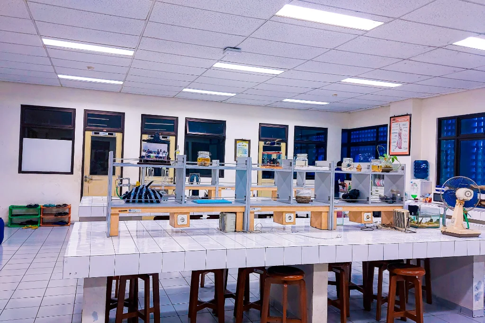
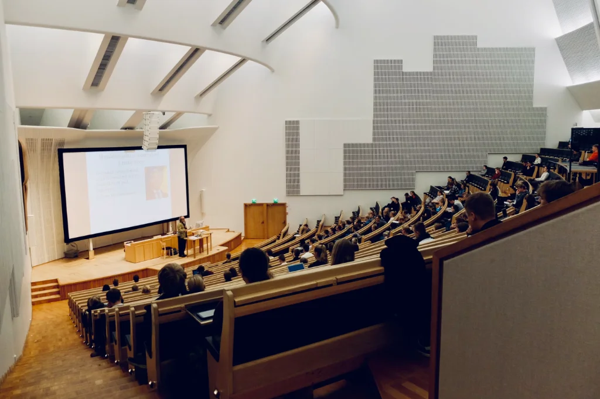
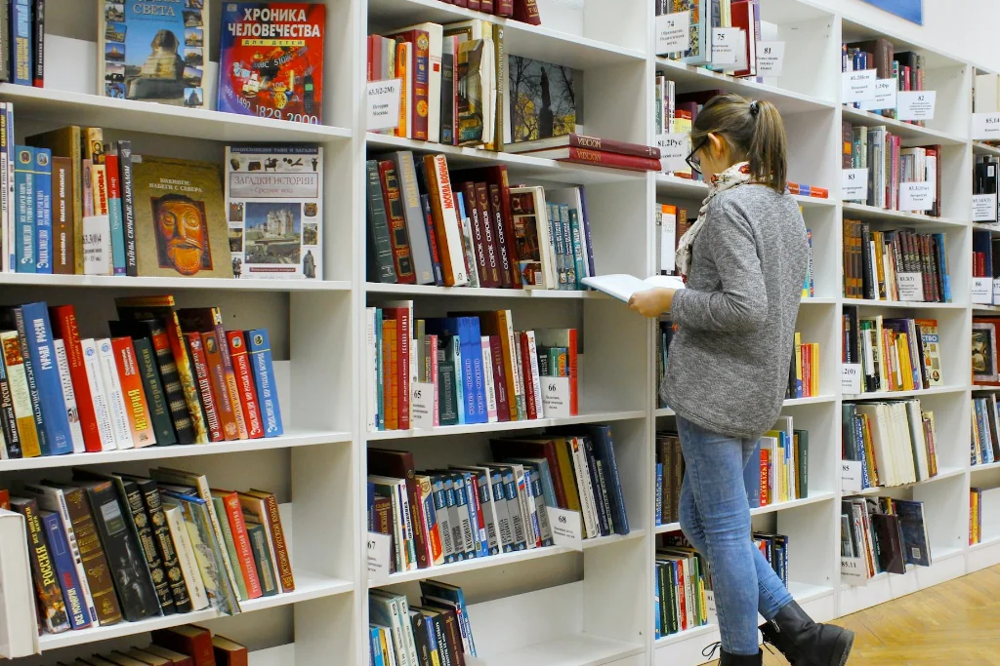

Kehidupan Mahasiswa
Dunia Kampus yang Hidup
Lebih dari sekadar mengejar nilai, di sini tempatmu menemukan jati diri dan sahabat seumur hidup

Pengalaman Kuliah yang Seru dan Berwarna
Masa kuliah di Portal Kampus adalah perpaduan antara eksplorasi ilmu pengetahuan, pengembangan bakat kreatif, dan aksi sosial nyata. Lingkungan kampus yang asri dan terbuka memastikan setiap mahasiswa merasa diterima dan bebas berekspresi.
Klub & Unit Kegiatan Mahasiswa (UKM)
Seni Musik & Pertunjukan
Salurkan bakatmu di paduan suara mahasiswa, band kampus, ansambel musik akustik, hingga teater kontemporer.
18+ Komunitas SeniBahasa & Pertukaran Budaya
Klub debat bahasa Inggris, forum bahasa asing, dan perkumpulan persahabatan antar-budaya daerah dan negara.
15+ Komunitas BudayaKlub Sains & Teknologi
Wadah kolaborasi developer software, tim robotika, peneliti muda, dan komunitas pengembang startup.
20+ Kelompok RisetAksi Sosial & Relawan
Program bimbingan belajar anak-anak prasejahtera, peduli lingkungan hidup, dan tim tanggap bencana.
12+ Gerakan SosialAktivitas Olahraga & Kebugaran
Ruang Belajar & Rekreasi Kampus
Asrama Mahasiswa
Kamar berfasilitas lengkap, koneksi internet cepat, ruang komunal, dan sistem keamanan 24 jam.

Kantin & Pujasera
Puluhan stan makanan bergizi, higienis, dan ramah di kantong dengan area santai terbuka.

Perpustakaan Riset
Ruang baca hening, ruang diskusi kedap suara, serta jutaan e-book dan jurnal bereputasi.

Sport & Wellness Center
Gym modern dengan peralatan lengkap, lapangan futsal indoor, dan instruktur bersertifikasi.
Pusat Layanan Mahasiswa
Konseling & Kesehatan Mental
Konsultasi privat gratis bersama konselor profesional untuk membantumu mengatasi stres kuliah.
Info LayananPusat Karier & Magang
Pelatihan pembuatan CV, simulasi interview kerja, dan rujukan magang langsung ke mitra korporasi.
Info LayananTutor Sebaya & Inklusi
Bimbingan belajar antar-mahasiswa untuk mata kuliah menantang serta pendampingan difabel.
Info LayananMomen Hangat di Kampus


Pertanyaan Kehidupan Kampus & Mahasiswa (FAQ)
Ketahui dinamika organisasi mahasiswa, estimasi biaya hidup harian, dukungan kesehatan mental, dan inkubasi bisnis
Terdapat lebih dari 60 Unit Kegiatan Mahasiswa (UKM) dan komunitas minat bakat yang aktif dan berprestasi, dikelompokkan ke dalam:
- Olahraga & Bela Diri: Sepak bola, futsal, basket, bulu tangkis, taekwondo, panahan, dan esport.
- Seni & Kebudayaan: Paduan suara mahasiswa, seni tari nusantara, teater, fotografi, sinematografi, dan marching band.
- Penalaran Ilmiah & Riset: Tim robotika, klub AI & programming, debat bahasa Inggris/Arab, dan forum karya tulis ilmiah.
- Sosial & Lingkungan: Korps Sukarela (KSR PMI), Mahasiswa Pecinta Alam (Mapala), dan relawan desa binaan.
Pendaftaran UKM dibuka setiap awal semester melalui agenda UKM Fair tahunan.
Biaya hidup mahasiswa di lingkungan sekitar Portal Kampus tergolong ramah kantong dengan estimasi total Rp 1.800.000 – Rp 3.200.000 per bulan, rincian rata-rata:
- Akomodasi Tempat Tinggal: Kost standar sekitar kampus berkisar Rp 700.000 – Rp 1.500.000/bulan, atau Asrama Kampus bersubsidi sekitar Rp 500.000/bulan.
- Makan & Minum: Kantin pujasera kampus menyediakan aneka menu bergizi higienis mulai Rp 15.000 – Rp 25.000 per porsi.
- Transportasi: Tersedia armada Shuttle Bus Kampus listrik gratis yang melayani halte-halte utama sekitar stasiun dan asrama.
Ya, 100% gratis dan rahasia. Portal Kampus memiliki Pusat Bimbingan Konseling & Layanan Psikologi Mahasiswa yang beranggotakan psikolog klinis berlisensi.
Mahasiswa yang menghadapi beban akademik, kecemasan adaptasi pertemanan, maupun stres perkuliahan dapat memesan jadwal sesi konseling tatap muka di ruang konseling privat atau konseling online secara anonim.
Melalui UniPulse Innovation Hub & Inkubator Bisnis, mahasiswa perintis startup didukung penuh dari tahap ideasi hingga komersialisasi:
- Akses gratis ke fasilitas Coworking Space, internet serat optik gigabit, dan ruang meeting representatif.
- Pendampingan intensif dari praktisi modal ventura (Venture Capital) dan pendiri startup alumni.
- Bantuan pengurusan legalitas perusahaan (PT Perorangan/CV) dan pendaftaran Hak Cipta/Merek (HAKI) gratis.
- Hibah modal awal (seed capital) hingga Rp 50.000.000 per tim melalui ajang tahunan Campus Pitching Day.
Seluruh mahasiswa baru diwajibkan mengikuti Pengenalan Kehidupan Kampus bagi Mahasiswa Baru (PKKMB) sebagai prasyarat administratif akademik.
Di Portal Kampus, kegiatan orientasi 100% bebas dari segala bentuk perpeloncoan, kekerasan fisik, maupun tugas nirfaedah (Zero Bullying Guarantee). Acara dirancang edukatif, inspiratif, dan menyenangkan, berfokus pada pengenalan metode riset modern, etika digital, kepemimpinan, dan pembentukan persahabatan inklusif.
Ingin Menjadi Bagian dari Komunitas Seru Kami?
Temukan program studi impianmu dan nikmati pengalaman perkuliahan penuh prestasi di Portal Kampus.
Gabung Portal Kampus Sekarang